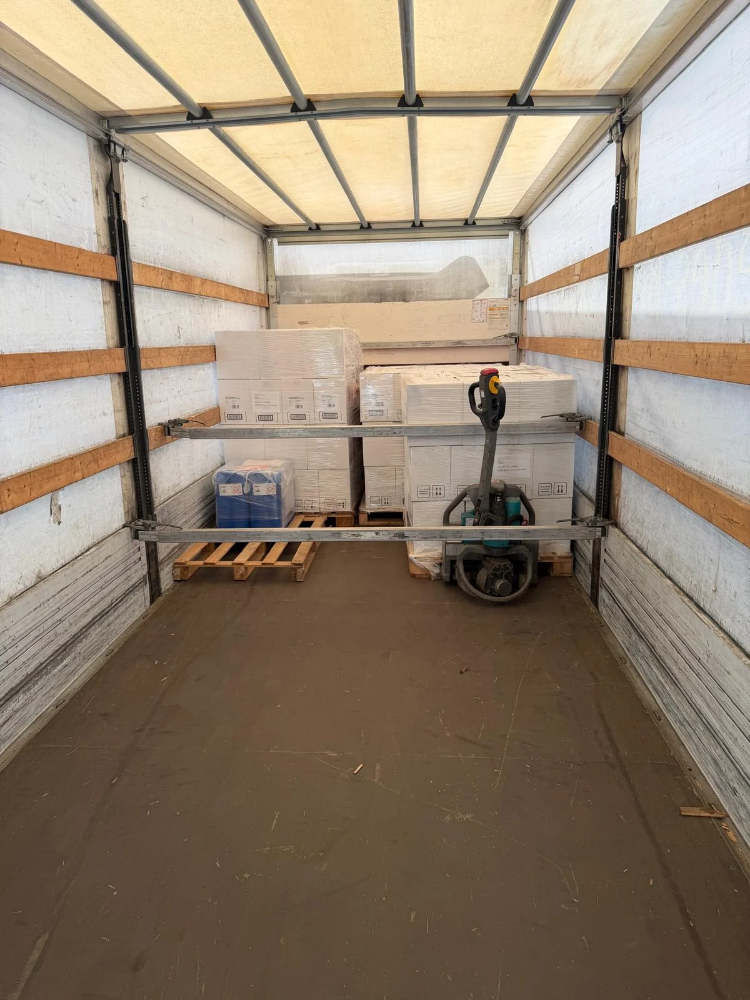
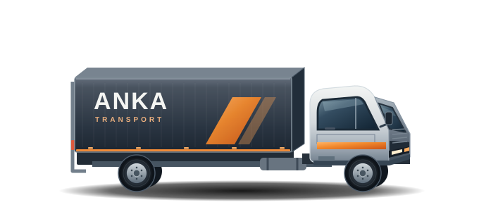
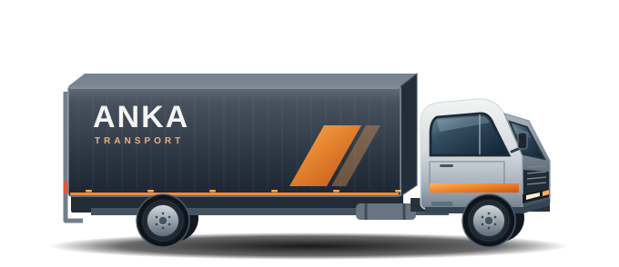
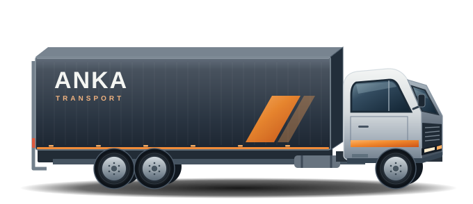
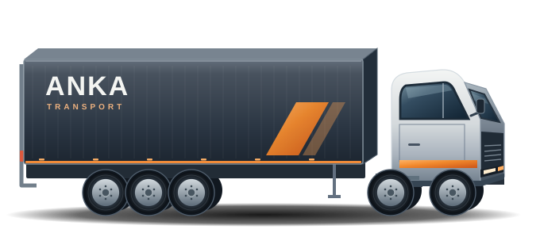
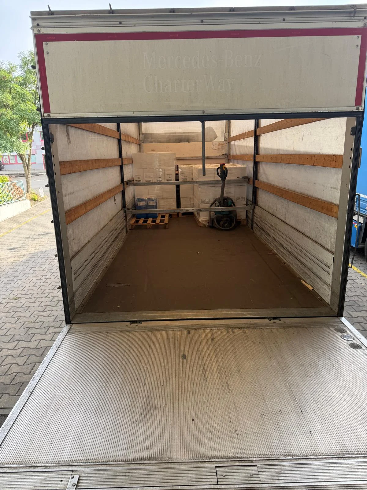

Sie sagen,
was ansteht.
Fahrzeugklasse, Einsatzort, Touren und Starttermin: Wir besprechen Ihren konkreten Bedarf.

Vom 7,5-Tonner bis zum Sattelzug. Mit Fahrer, für den gemeinsam vereinbarten Einsatz.
Fahrzeugklasse auswählen
EINBLICK IN DEN ANKA-LADERAUMWählen Sie Ihre Klasse.
Die Details klären wir im Gespräch.
Für Ihre regelmäßigen Transporte – mit Einsatzzeiten und Touren nach Vereinbarung.
Diesen Festeinsatz anfragen



Fahrzeugausstattung, Verfügbarkeit und Einsatzbedingungen stimmen wir persönlich mit Ihnen ab.
LKW und Fahrer für Ihren vereinbarten Einsatz. Die Planung machen wir gemeinsam.

Fahrzeugklasse, Einsatzort, Touren und Starttermin: Wir besprechen Ihren konkreten Bedarf.
Touren, Einsatzzeiten, Laufzeit und Konditionen werden gemeinsam vereinbart.
Mit LKW und Fahrer starten wir zum vereinbarten Termin in Ihren abgestimmten Einsatz.
Für Speditionen, Logistikdienstleister und Unternehmen mit regelmäßigen Touren oder langfristigen Transportaufgaben. ANKA TRANSPORT unterstützt Sie als Subunternehmer mit LKW und Fahrer.
Ja. Das Angebot umfasst LKW mit Fahrer im Festeinsatz. Fahrzeug und Einsatz werden gemeinsam mit Ihnen abgestimmt.
Hilfreich sind die gewünschte Fahrzeugklasse, der Einsatzort, Ihre Touren, Einsatzzeiten und der geplante Starttermin. Laufzeit und Konditionen klären wir gemeinsam.
Wir besprechen Ihren konkreten Bedarf und stimmen Touren, Einsatzzeiten, Laufzeit und Konditionen persönlich mit Ihnen ab.
Sprechen wir über Ihre Touren, Ihre Einsatzzeiten und das passende Fahrzeug.
Festeinsatz anfragen